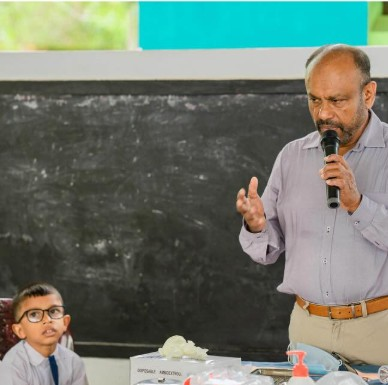
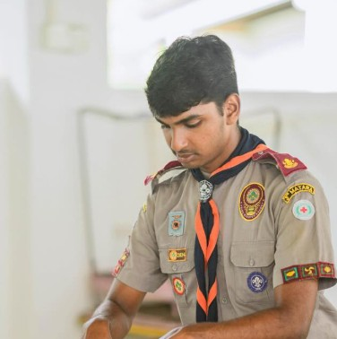
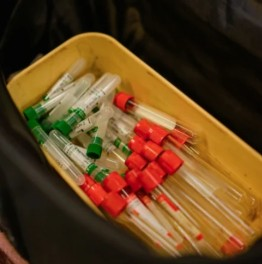
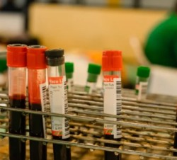
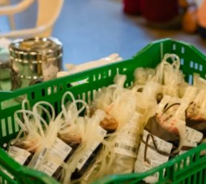
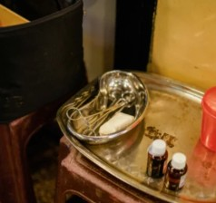
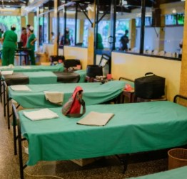
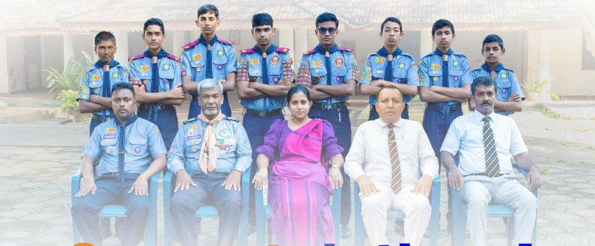

Scouting taught me that a community is something you serve, not just live in. These are the projects I'm proudest of.


Health camp for Matara Dudley Senanayake Primary School
My President's Scout Award community service project
Matara
For my President's Scout Award I needed a community service project, so I organised a health camp for the children of Matara Dudley Senanayake Primary School. It went very well. Our scout teacher, the Matara District Scout Commissioner and the school's principal came along, together with many others who supported the day.





Blood donation camp at the Matara Bodhi premises
150+ donors
Historic Matara Bodhi premises
We organised a blood donation camp at the historic Matara Bodhi premises, and it was a great success: more than 150 people came forward to donate blood.
Waren Heen Sare Matarata: a concert for Gurudevi Sunil Santha
Saturday 19 September 2026
6.30 PM onwards
Sanasa Hall, Nupe, Matara
Leo Club of Rahula College
An evening of music honouring Gurudevi Sunil Santha, the father of modern Sinhala music, with a new generation of singers bringing his timeless songs to life. The Leo Club of Rahula College took part, and Sakura Pre School was an official ticket outlet. Thank you to Iyon Lanka, the artists and every family who joined us for a beautiful night.

Representing Sri Lanka at the 19th National Jamboree
Rahula College Scout Contingent
India
I took part in the 19th National Jamboree in India, the grand finale of its Diamond Jubilee, with the Rahula College Scout Contingent representing Sri Lanka.